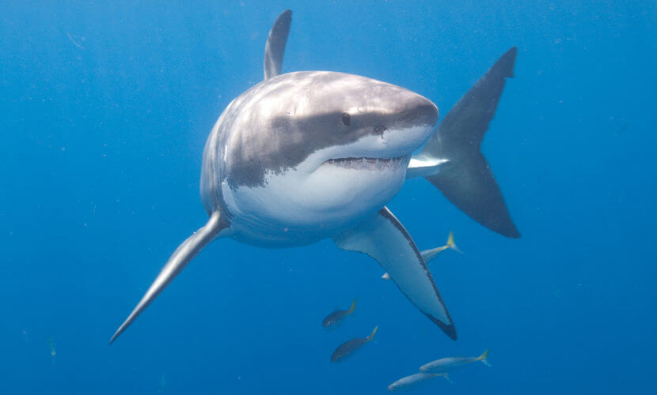
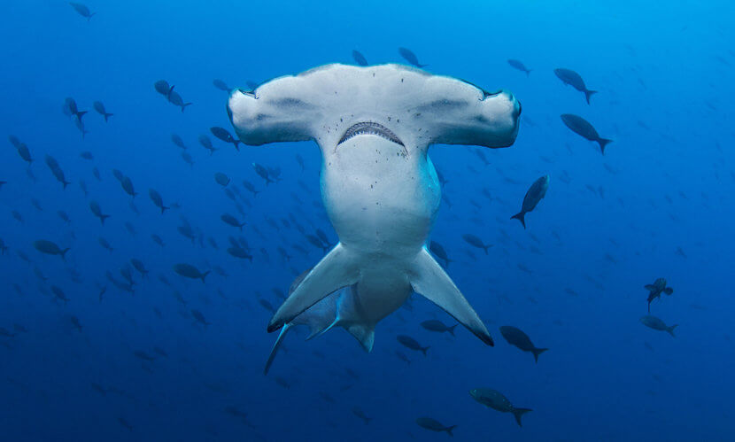
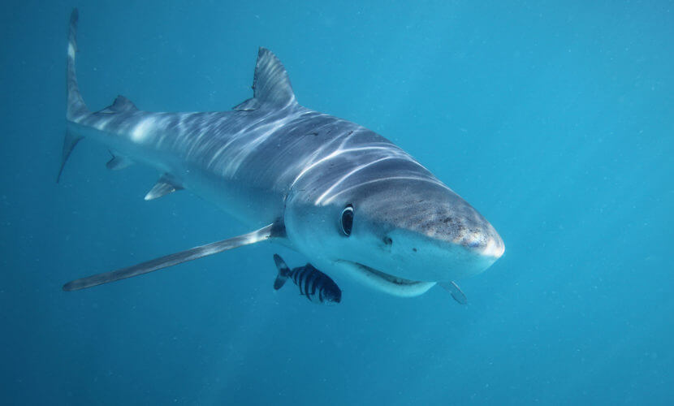

| Espécies | Foto |
|---|---|
| Tubarão-branco |  |
| Tubarão-martelo |  |
| Tubarão-baleia |  |
| Tubarão-azul |
Tubarão-azul (Prionace glauca)
Um tubarão azul pode pesar até 200 kg e crescer até cerca de 7 m de comprimento. Seu nome é derivado de sua coloração, que é um azul profundo na parte superior do corpo, um azul mais claro nas laterais e branco na barriga.
Ele possui grandes olhos, e uma longa nadadeira peitoral e cresce até 4 metros. Ele adora o mar aberto e raramente se aventura ficar muito perto da costa ou dos humanos. Eles viajam milhares de milhas por ano, se alimentam de lula e pequenos peixes em qualquer lugar desde a superfície até 450 metros de profundidade. Ele tem apele lisa e seu corpo é pequeno faz com que ele tenha um nado gracioso. Seus dentes são pontudos e serrados. Eles são considerados os menores tubarões entre os ditos Grandes Tubarões.
O tubarão-azul é um predador voraz; alimenta-se de quase tudo e caça em pequenos grupos, como casal ou em família. Ele é capaz de viajar longas distâncias em busca de comida e sua dieta é geralmente composta por um total de 16 espécies de peixes e 24 espécies de cefalópodes. Esses tubarões podem se alimentar até mesmo dos cadáveres de mamíferos que chegam ao mar ou de pássaros marinhos desavisados. Os peixes que eles comem regularmente são a pescada branca, pescada vermelha, sarda, carapau, lula, pescada prata, arenque, garoupa e bacalhau.
São vivíparos. Estes animais geram de 4 a 135 filhotes. O número de filhotes crescem proporcionalmente ao tamanho da mãe, ou seja quanto mais velha a mãe mais filhotes ela gera. A gestação dura um periodo de 1 ano. Femeas atingem a idade madura com 5 anos de idade.
O ritual de acasalamento dessa espécie consiste em uma mordida na fêmea pelo macho entre a primeira e a segunda barbatana dorsal. Vale lembrar que as fêmeas têm a pele até três vezes mais espessa do que a de um macho. Se o ritual de acasalamento for bem-sucedido, o macho usará as barbatanas pélvicas para fertilizar a fêmea.